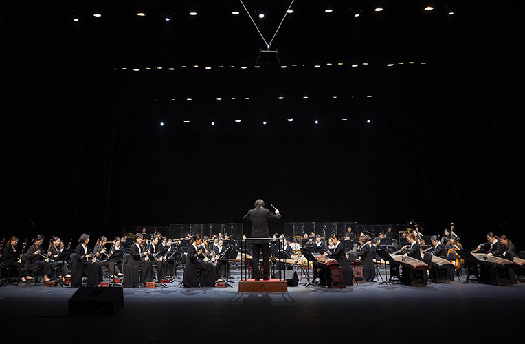

국립국악원 교류공연 <축원>
- 일시
- 2. 3.(금) 19:30
- 장소
- 연악당
- 관람료
- S석 10,000원 A석 8,000원
- 출연진/연출진
- 국립국악원 창작악단, 민속악단, 국립부산국악원 기악단 연희부 및 객원 이용탁(예술감독·지휘)
- 관람연령
- 취학아동이상
국립국악원 창작악단과의 교류와 화합의 무대, 계묘년 정월대보름 맞아 <축원> 선사!
2023 계묘년 입춘, 정월 대보름 맞이 나쁜 기운을 막고, 복을 빌어주는 국립국악원 창작악단의 ‘축원’의 무대.
세부프로그램
봄맞이_깨어난 초원, 말발굽 소리 (B.Sharav, M Birvaa 작곡) 액막음과 기원_바람과 나무와 땅의 시(時) (이정면 편곡) 기억속으로_시절풍류 (최지혜 작곡) 다시, 세상_범피중류 (이용탁 작곡) 새길을 걷다_소나기 (이경섭 작곡)
